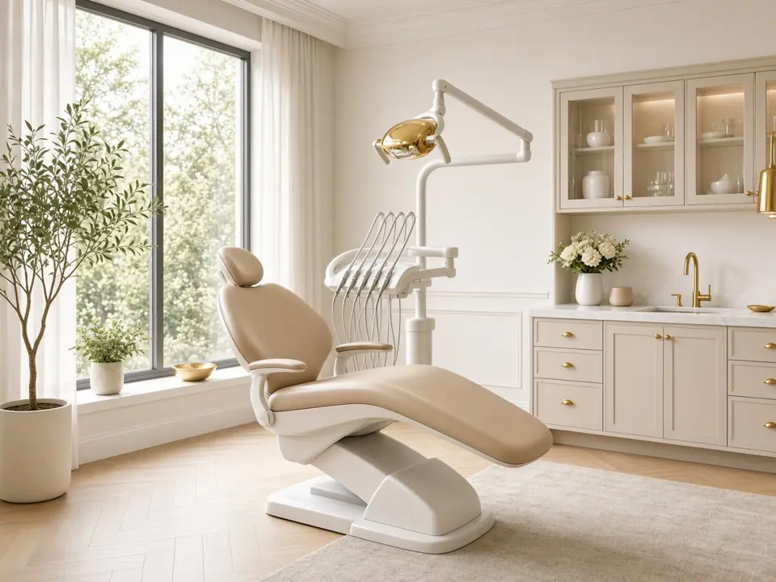

5+anos
Marcos Paulo
CEO e Fundador
Criador do Método PRIME. Desenha a estratégia e a estrutura de presença de cada projeto.
Para clínicas, consultórios e studios de alto padrão em saúde e beleza
Quem procura harmonização pesquisa você antes de chamar. O Método PRIME faz Google, Instagram, site e WhatsApp mostrarem o seu padrão.
01 (Google)
Perfil completo no Google: nota, fotos, horários e botões que levam à agenda.
Clínica Aurora
3,9 ★★★★★ (7)
Clínica de estética · Endereço incompleto
Horário não informado


Instituto Lumière
4,9 ★★★★★ (186 avaliações)
Harmonização facial · Jardins, São Paulo
Aberto · Fecha às 19:00
Ilustração · clínica e dados fictícios
02 (Instagram)
Bio clara, destaques que respondem dúvidas e um link que leva à agenda.
Clínica Aurora
✨💉💖 estética 💖✨
chama no direct!!
Instituto Lumière · Harmonização
Resultados naturais, com avaliação individual.
Jardins · SP · seg a sáb
🔗 lumiere.clinic/agendar


Ilustração · perfil e números fictícios
03 (Link da bio + WhatsApp)
Link da bio organizado e WhatsApp Business que responde, mostra e agenda.
Instituto Lumière
Harmonização facial · Jardins, SP
Agendar avaliaçãoFalar no WhatsAppProcedimentos e valoresComo chegarOi! Vi o perfil de vocês e queria saber sobre harmonização.
Olá! 👋 Que bom ter você aqui. Veja nossos procedimentos e escolha um horário para avaliação.Mensagem automática
Quarta 15:30 ✅
Ilustração · conversa e marca fictícias
04 (O método)
Cinco etapas, da pesquisa ao agendamento.
05 (Imagem)
Imagens ilustrativas geradas por IA · pessoas fictícias
06 (Projetos)
Páginas-modelo ilustrativas. Toque para abrir.
07 (Especialistas)
Quem pensa a estratégia trabalha lado a lado com quem cria a imagem.
5+anos
CEO e Fundador
Criador do Método PRIME. Desenha a estratégia e a estrutura de presença de cada projeto.
3+anos
Sócio-fundador
Dá forma à marca: identidade visual, criativos e vídeos com padrão de alto valor.
08 (Próximo passo)
7 perguntas rápidas.
0 a 100 e 3 oportunidades, na hora.
Diagnóstico em até 30 min no horário comercial. Sem venda.

09 (Raio-X de Presença)
10 (Dúvidas)
O Instagram é uma das peças. Quem investe em saúde e beleza de alto padrão também pesquisa no Google e quer um site que explique o seu serviço. O Método PRIME conecta tudo e leva para o WhatsApp ou para a agenda.
Não necessariamente. O Raio-X mostra o que já funciona. Às vezes ajustar páginas, textos e chamadas resolve; quando não, propomos um site novo.
Depende do escopo do seu negócio. O valor é apresentado depois do diagnóstico, com o que está incluído em cada etapa. O Raio-X e a conversa de diagnóstico são gratuitos.
Ajustes de perfil, Google e site costumam ficar prontos em poucas semanas. O efeito em contatos e agenda depende da sua cidade, da concorrência e da constância. Não prometemos números antes de analisar o seu caso.
Não é obrigatório. Ajudamos a definir o que faz sentido para a sua imagem e para a sua rotina.
Sim, na etapa Escala, quando a base (Google, Instagram e site) já está pronta para receber o investimento.
Não. Você recebe a nota e as oportunidades na hora e decide se quer conversar.
Não. Se você pedir, recebe uma ligação curta de diagnóstico: entendemos o seu negócio e explicamos o seu Raio-X. Se fizer sentido, marcamos uma videochamada para apresentar um plano. Se não fizer, tudo bem.
Em até 30 minutos durante o horário comercial (segunda a sexta, 9h às 18h). Fora desse horário, no próximo horário comercial. Se preferir, fale pelo WhatsApp ou escolha um horário na agenda.
Descubra em 2 minutos, de graça, onde você está perdendo esse paciente ou cliente.